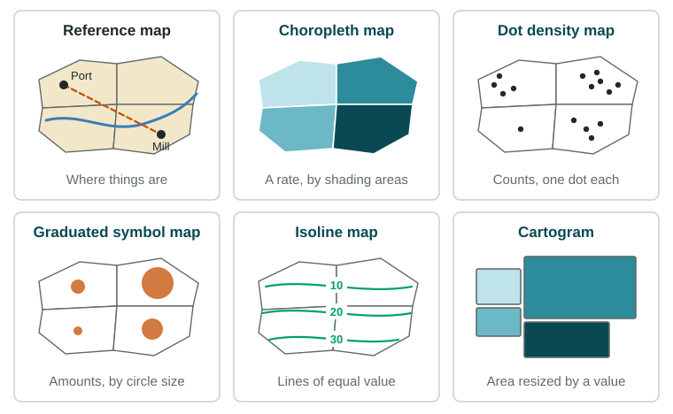
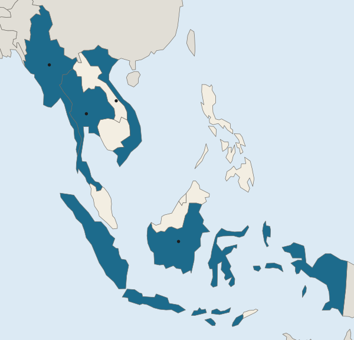

Introduction to Maps
Maps are tools with jobs.
Part 1 · Hook
Why this matters
Part 2 · Prerequisite check
Quick check before you start
1. A legend's classes run from "Under 40%" to "80% or more". What does the legend tell you?
- What each shade on the map stands for
- Who made the data and when
- How far apart places are on the ground
- The scale of analysis of the map
Show the answer
A legend says what each shade, symbol or line means. The source line gives who and when.
- Correct: What each shade on the map stands for:
- Who made the data and when:
- How far apart places are on the ground:
- The scale of analysis of the map:
2. Which map is the large-scale map?
- A town at 1:5,000
- The world at 1:100,000,000
- A continent at 1:20,000,000
- A country at 1:10,000,000
Show the answer
Large scale means a large fraction: things look big and the area shown is small.
- Correct: A town at 1:5,000:
- The world at 1:100,000,000:
- A continent at 1:20,000,000:
- A country at 1:10,000,000:
Part 3 · See it
See it first

Part 4 · Step by step
How it works, step by step
- The Earth is round and a map is flatevery map projection distorts shape, area, distance or direction
- A map maker chooses one property to keep trueother properties are stretched, so each projection suits some jobs and not others
- A thematic map shows one measure across placesthe map type (shades, dots, symbols, lines) decides which pattern you can see
Part 5 · Key ideas
Key ideas
- A reference map shows where things are (borders, cities, roads). A thematic map shows one topic or measure across places.
- Thematic types: a choropleth map shades areas by a rate or class; a dot density map shows counts as dots; a graduated symbol map sizes symbols by amount; an isoline map joins points of equal value; a cartogram resizes areas by a value.
- A map projection flattens the globe and always causes distortion of shape, area, distance or direction. Choosing one is a trade-off.
- Absolute distance and direction use kilometers and the compass; relative distance and direction depend on time, cost or the viewer. Maps also show clustering, dispersal and elevation.
Part 6 · Misconception
A common mistake
The wrong idea: There is one correct world map that shows the Earth as it really is.
What actually happens: Every flat map distorts something. A map that keeps areas true stretches shapes, and one that keeps shapes true inflates areas toward the poles. The right projection depends on the job.
Part 7 · Check yourself
Check yourself
Exam-style questions. Anything you miss goes into your review queue.
Map
Southeast Asia: a reference map with four countries marked

- Countries named in the questions
1. Which kind of map is this, and how can you tell?
- A reference map: it shows where countries and borders are, with no theme
- A thematic map: it shades four of the countries to show a measure
- A thematic map: its legend gives classes of values for the countries
- A reference map: it uses shades to show how many people live in each country
Show the answer
Reference maps show where things are; thematic maps show a measure or theme. This map has locations and labels only.
- Correct: A reference map: it shows where countries and borders are, with no theme: Right: a reference map shows locations and names. The four shaded countries are only highlighted so you can find them.
- A thematic map: it shades four of the countries to show a measure: The highlight marks the countries in the questions; there are no values, so there is no theme.
- A thematic map: its legend gives classes of values for the countries: The legend here names countries; it has no classes of values.
- A reference map: it uses shades to show how many people live in each country: It is a reference map, but the shading carries no values such as how many people live there.
2. Which two marked countries share a land border?
- Q and R
- P and Q
- R and S
- P and S
Show the answer
Read the borders on the map: only Myanmar and Thailand touch among the four marked countries.
- Q and R: Thailand (Q) and Viet Nam (R) do not touch: Laos and Cambodia lie between them.
- Correct: P and Q: Right: Myanmar (P) and Thailand (Q) meet along a land border in the west of the mainland.
- R and S: Viet Nam (R) is on the mainland and Indonesia (S) is made of islands across the sea.
- P and S: Indonesia (S) is separated from Myanmar (P) by sea.
3. Using absolute direction, where is Indonesia (S) from Viet Nam (R)?
- North
- West
- South
- Northeast
Show the answer
Absolute direction uses the compass (north, south, east, west), which stays the same wherever you stand.
- North: R is north of S, not the other way around.
- West: Indonesia stretches east and west, but it lies south of Viet Nam.
- Correct: South: Right: S lies below R on the map, and north is at the top.
- Northeast: Northeast of Viet Nam is the sea toward the Philippines and Taiwan, not Indonesia.
4. Every flat world map is drawn with a map projection. Which statement about projections is accurate?
- A good projection keeps shape, area, distance and direction true at once
- A projection that keeps the sizes of areas true has to stretch some shapes
- Projections change the colors of a map but not its shapes
- Projections matter for maps of a town but not for world maps
Show the answer
A projection is a trade-off: it can keep area, or shape, or some distances or directions true, but never all of them.
- A good projection keeps shape, area, distance and direction true at once: No flat map keeps all four true; each projection trades some properties for others.
- Correct: A projection that keeps the sizes of areas true has to stretch some shapes: Right: a round Earth cannot be flattened without distortion, so keeping one property true costs another.
- Projections change the colors of a map but not its shapes: A projection is the method for flattening the globe; it changes shapes and sizes, not colors.
- Projections matter for maps of a town but not for world maps: Distortion grows with the area shown, so it matters most on world maps.
5. On one common world map, Greenland looks about as large as Africa, yet Africa has about 14 times more land. What does that map distort most?
- Direction, which it reverses near the equator
- Elevation, which it exaggerates in cold places
- Area, which it stretches more and more toward the poles
- Distance between neighbors on the same continent, such as Europe
Show the answer
When a map makes a land mass near the pole look far too big, it is distorting area.
- Direction, which it reverses near the equator: The problem in the example is size, not direction.
- Elevation, which it exaggerates in cold places: Elevation is not shown on such a map at all.
- Correct: Area, which it stretches more and more toward the poles: Right: maps that keep local shapes true often inflate areas far from the equator, as with Greenland.
- Distance between neighbors on the same continent, such as Europe: The example compares the sizes of two land masses, not distances.
6. Two towns are each 100 km from a city. One is linked by a highway, the other by a winding mountain road, so one trip takes 1 hour and the other 3 hours. What does this show?
- Absolute distance: both towns are 100 km away, so the two trips are equal
- Relative direction: the two towns lie in different directions from the city
- Elevation: the mountain town is higher, so its road is longer in kilometers
- Relative distance: travel time differs though the absolute distance is equal
Show the answer
Absolute distance is measured in kilometers or miles; relative distance in time, cost or ease of travel.
- Absolute distance: both towns are 100 km away, so the two trips are equal: The absolute distance is equal, but the question is about how long the trips take.
- Relative direction: the two towns lie in different directions from the city: Nothing in the question says which direction each town lies.
- Elevation: the mountain town is higher, so its road is longer in kilometers: A mountain road suggests hills, but the point here is time, not height.
- Correct: Relative distance: travel time differs though the absolute distance is equal: Right: relative distance measures how far a place feels, in time or cost, not kilometers.
7. A cartogram resizes each country by its number of people. Which change from a normal world map would you expect?
- Canada and Russia grow larger because they have the most land
- Countries keep their usual sizes, but their colors change with the data
- India and China grow much larger, while Canada and Russia shrink
- Australia grows larger than Asia because it is a whole continent
Show the answer
A cartogram trades true shape and area for a size that matches the data.
- Canada and Russia grow larger because they have the most land: A population cartogram shrinks land-rich, thinly peopled countries like these.
- Countries keep their usual sizes, but their colors change with the data: Changing the sizes is the whole point of a cartogram.
- Correct: India and China grow much larger, while Canada and Russia shrink: Right: India and China each have over a billion people (UN WPP 2024), while Canada and Russia have huge land areas but far fewer people.
- Australia grows larger than Asia because it is a whole continent: Australia has far fewer people than Asia, so it would shrink.
Part 8 · Summary
Summary
Part 9 · Up next
What comes next
Part 10 · Connections